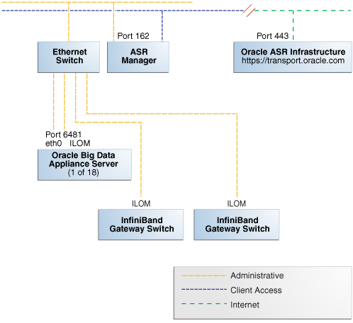

5 Setting Up Auto Service Request
This chapter explains how to install and configure Auto Service Request for Oracle Big Data Appliance. It contains these sections:
- Understanding Auto Service Request
- Getting Ready to Install ASR
- Installing ASR Manager
- Verifying the ASR Manager Installation
- Configuring the Trap Destinations on Oracle Big Data Appliance
- Verifying ASR Assets
- Validating Auto Service Request on Oracle Big Data Appliance
- Troubleshooting ASR
Parent topic: Preinstallation
5.1 Understanding Auto Service Request
Auto Service Request (ASR) is designed to automatically open service requests when specific Oracle Big Data Appliance hardware faults occur. ASR detects faults in the most common server components, such as disks, fans, and power supplies, and automatically opens a service request when a fault occurs. ASR monitors only server components and does not detect all possible faults.
ASR is not a replacement for other monitoring mechanisms, such as SMTP and SNMP alerts, within the customer data center. It is a complementary mechanism that expedites and simplifies the delivery of replacement hardware. ASR should not be used for downtime events in high-priority systems. For high-priority events, contact Oracle Support Services directly.
When ASR detects a hardware problem, ASR Manager submits a service request to Oracle Support Services. In many cases, Oracle Support Services can begin work on resolving the issue before the administrator is even aware the problem exists.
An email message is sent to both the My Oracle Support email account and the technical contact for Oracle Big Data Appliance to notify them of the creation of the service request.
A service request may not be filed automatically on some occasions. This can happen because of the unreliable nature of the SNMP protocol or a loss of connectivity to ASR Manager. Oracle recommends that customers continue to monitor their systems for faults and call Oracle Support Services if they do not receive notice that a service request has been filed automatically.
See Also:
-
Oracle Auto Service Request web page at
http://www.oracle.com/technetwork/systems/asr/overview/index.html -
Oracle Auto Service Request user documentation at
http://www.oracle.com/technetwork/systems/asr/documentation/index.html
Parent topic: Setting Up Auto Service Request
5.2 Getting Ready to Install ASR
Before installing ASR, complete these prerequisites:
Figure 5-1 shows the network connections between ASR and Oracle Big Data Appliance.
Figure 5-1 Auto Service Request Network Connections
Description of "Figure 5-1 Auto Service Request Network Connections"
Parent topic: Setting Up Auto Service Request
5.3 Installing ASR Manager
To install ASR Manager, download the current version from My Oracle Support ID 1185493.1. Then follow the instructions in the Oracle Auto Service Request Quick Installation Guide at
http://docs.oracle.com/cd/E37710_01/index.htm
Do not set up the assets.
Parent topic: Setting Up Auto Service Request
5.4 Verifying the ASR Manager Installation
As root, perform these checks on ASR Manager to ensure that it is installed properly:
-
Verify that ASR Manager 3.5 or later is running:
asr show_rules_version
-
Check the registration status:
asr show_reg_status
-
Test the connection by sending a test message to the transport server.
asr test_connection
Parent topic: Setting Up Auto Service Request
5.5 Configuring the Trap Destinations on Oracle Big Data Appliance
ASR is an optional software component of Oracle Big Data Appliance. When configuring the software in Oracle Big Data Appliance Configuration Generation Utility, you must complete the section about ASR. Then during the software installation, the Mammoth utility configures the servers to trap the component fault indicators.
bdacli enable to activate configuration changes:# bdacli enable asrbdacli disable asr first and then run bdacli enable asr .
Parent topic: Setting Up Auto Service Request
5.7 Validating Auto Service Request on Oracle Big Data Appliance
To set up a test event on Oracle ILOM:
-
Log in to the Oracle ILOM of any server in Oracle Big Data Appliance.
-
Change to the following directory:
-> cd /SP/alertmgmt/rules/3
-
Enter this command:
-> show
The following information is displayed:
/SP/alertmgmt/rules/3 Targets: Properties: type = snmptrap level = disable destination = 0.0.0.0 destination_port = 0 community_or_username = public snmp_version = 1 testrule = (Cannot show property) Commands: cd set show -
Ensure that the properties have valid values, not blank or set to zeros as shown in Step 3. Use the appropriate IP address and port for your site.
-
-> set testrule=true
-
You should receive an email about the event. Verify that an email was also sent to the address listed in your customer support identifier (CSI) for Oracle Big Data Appliance.
To set up a test in the operating system environment:
-
Log in to any server on Oracle Big Data Appliance.
-
Enter this command to validate the operating system.
# ./opt/oracle/bda/compmon/bda_mon_hw_asr.pl -validate_snmp_subscriber -type asr
The sample output shows 10.10.10.123:162 as the ASR Manager address:
Sending test trap to destination - 10.10.10.123:162
-
Verify that an email about the event was sent to you and to the address listed in your customer support identifier (CSI) for Oracle Big Data Appliance.
This test event does not open a case, but it makes a verifiable entry in the ASR back end.
If you received the emails from both of the previous tests (Oracle ILOM and operating system environment), then your validation is complete. If not, then proceed to "Troubleshooting ASR".
If the emails state that there are contract issues, contact your installation coordinator for further assistance.
Parent topic: Setting Up Auto Service Request
5.8 Troubleshooting ASR
For troubleshooting procedures for the ASR software, see Chapter 5 of the Oracle ASR Installation and Operations Guide at:
http://www.oracle.com/technetwork/systems/asr/documentation/index.html
If you continue to have issues, contact ASR support. See My Oracle Support Note 1352349.1.
Parent topic: Setting Up Auto Service Request